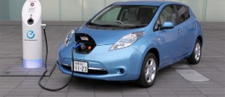
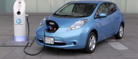

Avanços Tecnológicos
2010: sensor e movimento nos jogos, tablets e carro elétrico.
 


Filmes/Desenhos/Séries:
2013: “Thor 2: O Mundo Sombrio“
Músicas de Sucesso:
2014: “Treasure” - Bruno Mars
Acontecimentos Diversos;
2010 : Copa do Mundo FIFA sediada na África do Sul.